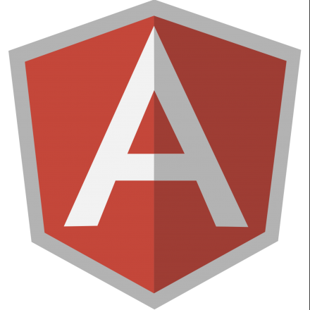

Structuring big apps
with AngularJS
Logical Strcture
Do it the angular way...

Modules
angular.module('yourAppName', ['yourAppName.yourAppDependency']);
angular.module('yourAppName.yourAppDependency');
Define and configure all modules in a app.js
Directives
//My cool applicaton
angular.module('yourAppName.yourAppDependency')
.directive('mcaControlPanel', function () {
// ...
});
Prefix them to avoid collision with 3rd party components
Filters
{{userModel.name | lastNameFirst}}
Can be called multiple times
angular.module('myApp')
.controller('MyCtrl', function ($scope, $http, $filter) {
$http.get('/userModel')
.success(function (data) {
$scope.userModel = data;
$scope.userModel.name = $filter('lastNameFirst')($scope.userModel.name);
});
});
Called only once
Services
app.service('MyService', function ($http, $q, $angularCacheFactory) {
var _dataCache = $angularCacheFactory('dataCache', {
maxAge: 3600000 // items expire after an hour
});
/**
* @class MyService
*/
return {
manipulateData: function (input) {
var output;
// do something with the data
return output;
},
getDataById: function (id) {
var deferred = $q.defer();
if (_dataCache.get(id)) {
deferred.resolve(_dataCache.get(id));
} else {
// Get the data from the server and populate cache
}
return deferred.promise;
}
};
});
Controllers
angular.module('yourAppName.yourAppDependency')
.controller('MyCtrl', function () {
// ...
});
Define controllers, services, etc. on modules like this
Scopes

Common pitfalls
- Digest cycle and expressions
- References to DOM elements
- Not using built-ins
- Wrong current scope
Testing
Unit test
describe( 'AppCtrl', function() {
describe( 'isCurrentUrl', function() {
var AppCtrl, $location, $scope;
beforeEach( module( 'ngBoilerplate' ) );
beforeEach( inject( function( $controller, _$location_, $rootScope ) {
$location = _$location_;
$scope = $rootScope.$new();
AppCtrl = $controller( 'AppCtrl', { $location: $location, $scope: $scope });
}));
it( 'should pass a dummy test', inject( function() {
expect( AppCtrl ).toBeTruthy();
}));
});
});
E2E Testing
describe( 'ng-boilerplate', function() {
var url = '/base/build/index.html';
describe( 'smoke test', function() {
it( 'initial state', function () {
// Trigger state change: Load page
browser().navigateTo(url);
// Check rendered HTML: Top heading is correct, and ng-view content has correct heading
expect(element('div.masthead h3', 'top heading').text()).toContain('ng-boilerplate');
// Check URL partial: /home
expect(browser().window().hash()).toEqual('/home');
});
});
});
Physical layout
Pick a seed project
Angular Seed Project
Yeoman
ngBoilerplate
ng-Boilerplate
- Project layout organized per feature
- Tests alongside the code
- Complex build process
Overall Directory Structure
ng-boilerplate/
|- grunt-tasks/
|- karma/
|- src/
| |- app/
| | |- [app logic]
| |- assets/
| | |- [static files]
| |- common/
| | |- [reusable code]
| |- less/
| | |- main.less
|- vendor/
| |- angular-bootstrap/
| |- bootstrap/
| |- placeholders/
|- .bowerrc
|- bower.json
|- build.config.js
|- Gruntfile.js
|- module.prefix
|- module.suffix
|- package.json
The 'src' directory
src/
|- app/
| |- home/
| |- about/
| |- app.js
| |- app.spec.js
src/
|- app/
| |- home/
| | |- home.js
| | |- home.less
| | |- home.spec.js
| | |- home.tpl.html
AngularJS Companions
- angular-bootstrap
- angular-ui-utils
- angular-ui-router